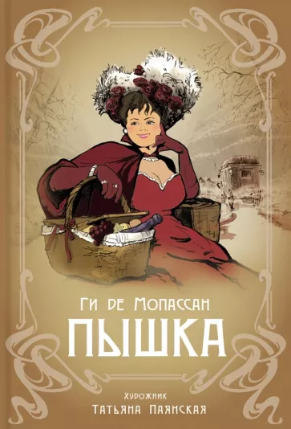

TATY.PAYANSKY
Паянская Татьяна Юрьевна
Это кто?(Шутка)
Художник-график. Иллюстратор. Член Творческого Союза Художников России. Художник, с академическим образованием, легкой и немного нестандартной, но при этом классической подачей иллюстраций, передающая эмоции от прочитанных книг, тонко чувствующая пожелания редактора и с легкостью воплощает их в жизнь. Taty Payansky востребованный автор, создающий запоминающиеся образы в книжной графике, которые помогают читателю ощутить эпоху и конкретную ситуацию, описываемую в книге. Работая над книгой, Taty Payansky изучает историю костюма, интерьера и основные элементы данного периода, о котором идет речь в повествовании.
- Заказов я не знаю сколько
- Отзывов я не знаю сколько
- Работ я не знаю сколько
Книги
-
URL
Таинственный сад
Любимая классика сентиментальной литературы, история сироты Мэри Леннокс, нашедшей дверцу в удивительный заброшенный сад, который изменит и ее жизнь, и жизнь всех обитателей дома, - в новом оформлении в подарочной серии "Коллекция".
Иллюстрации Татьяны Паянской, сотканные из линий и полутонов, рождают идеальное сочетание изысканной красоты и глубины объекта. Художнице с академическим образованием, с немного нестандартной, но при этом классической подачей иллюстраций, легко удается передать эмоциональный фон произведений. Для детей среднего и старшего школьного возраста.
-
URL
Сердца трёх
Джек Лондон (1876—1916) — известный американский писатель и общественный деятель. Роман "Сердца трех" (1916) был написан Джеком Лондоном незадолго до его смерти и стал юбилейной работой автора — его пятидесятой книгой.
В предисловии к роману автор написал, что взялся за работу по причине отсутствия новых сюжетов для кинематографа. И действительно, роман, как и многие другие произведения писателя, был неоднократно экранизирован.
Прекрасные иллюстрации в исполнении Татьяны -

Натали никак не может решить, кого из двух любовников предпочесть в качестве будущего мужа. Свои мысли переменчивая красотка доверяет дневнику, подробно описывая страстные свидания то с художником Модестом, то со студентом Володей. Однако есть тут одно шокирующее обстоятельство: не прошло и пары дней, как супругу Натали Виктору насмерть размозжили голову прямо в их доме…
Три причин купить:
1 Поэт Валерий Брюсов оказывается был и отличным прозаиком тоже.
2 А писать от лица женщины - это вообще высший пилотаж!
3 Неповторимые образы, которые можно лицезреть
-

URL
ПышкаНа следующее утро после выхода в свет "Пышки", своего дебютного произведения, тридцатилетний Ги де Мопассан проснулся знаменитым. История маленькой, кругленькой, аппетитной особы легкого поведения буквально всколыхнула французское общество. Да, она малообразованна, да, она вульгарна, и да, она продает свое тело. Однако насколько благороднее, выше и духовнее выглядит эта женщина на фоне благочестивых, но лицемерных буржуа, готовых ради собственных интересов продать Родину. Однажды прочитав сильную, глубокую и такую вкусную "Пышку", читатель запомнит ее на всю жизнь.
-

По примеру графа Шереметева Фёдор Фёдорович Урасов открывает в Пухове крепостной театр, желая ставить на сцене оперы и балеты. Проездом в деревне барин примечает в хороводе юную Дуню Чекунову с высоким сильным голосом и забирает в своё поместье. Сварливая надзирательница Матрёна Сидоровна, талантливый скрипач-итальянец Антон Тарасович, милый сердцу Петруша, - с кем только ни сведёт Дуню непростая жизнь в Пухове. Повесть о русском театре XVIII века дополняют иллюстрации Татьяны Паянской.
Для среднего школьного возраста.
Сюда я не придумал пока что вставлять
Можно придумать что-то в роде:
(до встречи в книжном мире)